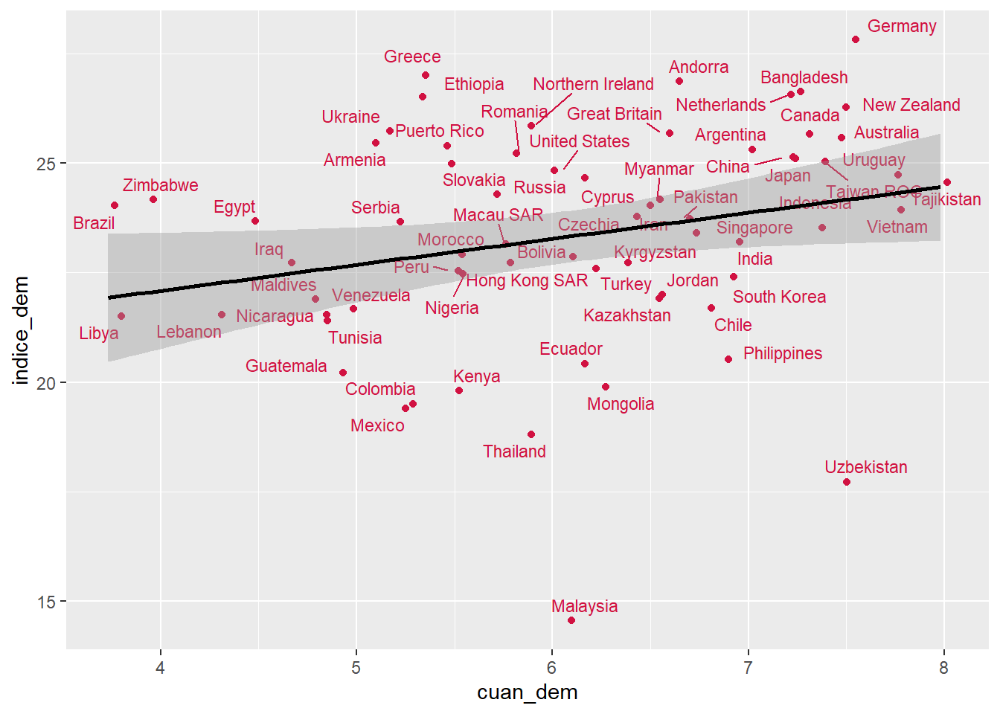
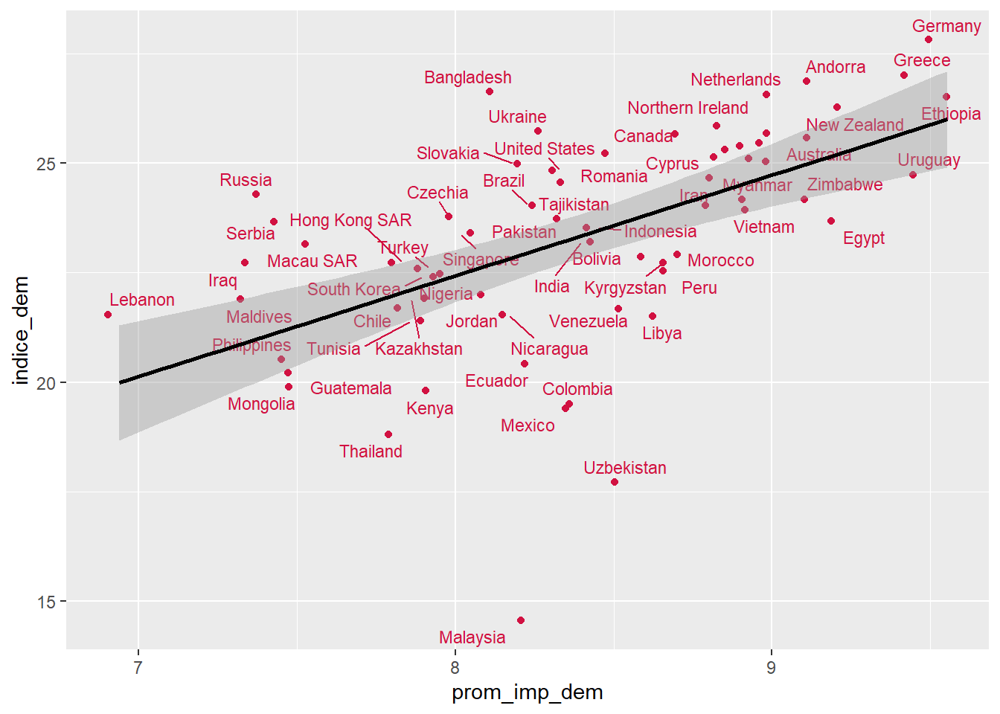
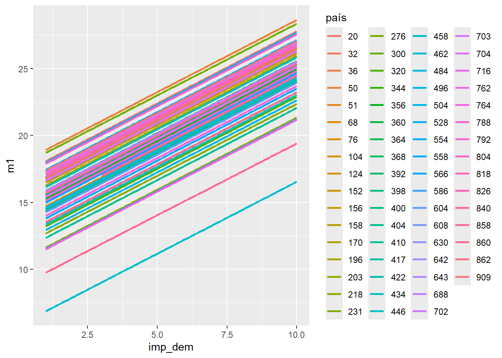
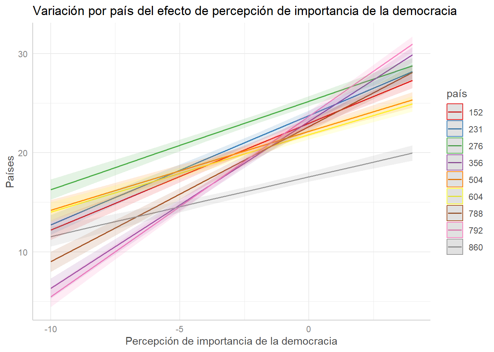
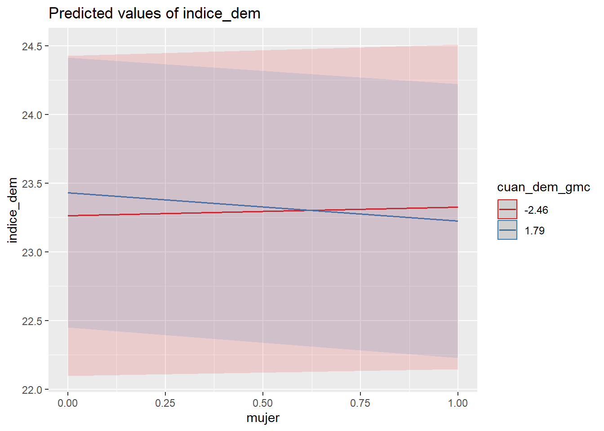
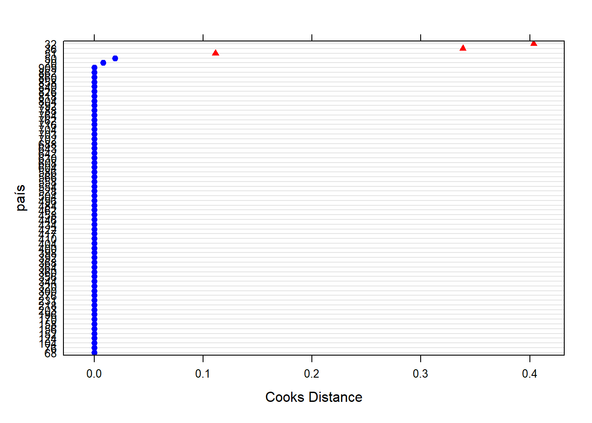

| var | label | n | NA.prc | mean | sd | range | |
|---|---|---|---|---|---|---|---|
| 3 | indice_dem | indice_dem | 88207 | 0 | 23.36 | 6.34 | 30 (0-30) |
| 5 | país | ISO 3166-1 numeric country code | 88207 | 0 | 443.67 | 255.20 | 889 (20-909) |
| 1 | grp_econ | Scale of incomes | 88207 | 0 | 4.95 | 2.08 | 9 (1-10) |
| 2 | imp_dem | Importance of democracy | 88207 | 0 | 8.38 | 2.11 | 9 (1-10) |
| 4 | mujer | mujer | 88207 | 0 | 0.52 | 0.50 | 1 (0-1) |
Adhesión a principios democráticos liberales: entre las percepciones individuales y los contextos nacionales
Estadística multinivel 2025
Abstract
En la presente investigación, se estudia cómo inciden las percepciones individuales y los ambientes democráticos nacionales en el apoyo ciudadano a los principios fundamentales de la democracia liberal a nivel mundial. Se utilizaron los datos de World Values Survey (Ola 7) para crear un modelo multinivel; a partir de esto, se realizó un índice de percepción sobre principios de la democracia liberal, compuesto por percepciones respecto a los derechos civiles, las elecciones libres y la igualdad género. Preliminarmente, los resultados indican una varianza significativa entre países (ICC =0,148); en este sentido, la valoración individual a la democracia y la atmosfera democrática nacional muestran efectos positivos en el respaldo democrático, pero tanto el nivel económico cómo el género presentan resultados mixtos.
Introducción
Durante la última década, la democracia liberal ha enfrentado múltiples tensiones a nivel global. Pese a que muchos países mantienen formalmente estructuras como elecciones libres, división de poderes y garantías civiles, diversos estudios han evidenciado una creciente insatisfacción ciudadana con el funcionamiento efectivo de los sistemas democráticos, incluso en contextos donde formalmente se mantienen principios como la división de poderes, las elecciones libres o la garantía de derechos civiles (Wike, Silver & Castillo, 2019). Esta paradoja - entre la vigencia normativa de la democracia liberal y su desafección pública - constituye un problema de investigación relevante para las ciencias sociales, ya que pone en cuestión el grado de adhesión sustantiva de la ciudadanía a los principios que estructuran dicho régimen político.
Desde una perspectiva sociológica, el problema se aborda como una tensión entre estructuras normativas y disposiciones subjetivas. Autores como Almond y Verba (1963) entienden la cultura política como un conjunto de orientaciones subjetivas —cognitivas, afectivas y valorativas— hacia el sistema político. Esta noción permite vincular la percepción individual con la legitimidad y estabilidad de los regímenes democráticos, lo que permite preguntarse acerca de cómo distintos tipos de cultura política condicionan la participación democrática y el respaldo a sus principios fundamentales.Inglehart y Welzel (2005), por su parte, plantean que los valores de autoexpresión y autonomía son claves para el sostén de regímenes democráticos liberales; estos valores se fortalecen en contextos donde los recursos materiales están asegurados y donde la cultura favorece la autoexpresión individual, reforzando el respaldo a la democracia liberal desde una base cultural más profunda. Así, el objeto de estudio de esta investigación son las actitudes ciudadanas frente a los principios fundamentales de la democracia liberal: derechos civiles, igualdad política y límites al poder.
Desde este enfoque, es posible plantear que la percepción subjetiva de vivir en una democracia —así como la valoración que se le atribuye a esta forma de gobierno— actúan como catalizadores del respaldo a los principios de la democracia liberal. Esto sugiere una doble dimensión del fenómeno: por un lado, el efecto de la interiorización de valores democráticos en los individuos; y por otro, la influencia del contexto nacional, que puede reforzar o debilitar dicha interiorización. Tal como lo expone la evidencia empírica recogida por Welzel e Inglehart (2005a), las aspiraciones masivas de libertad tienen una capacidad explicativa superior a otras variables estructurales, como el PIB per cápita o el capital social, al analizar el proceso de democratización y su sostenibilidad en el tiempo.
Hasta ahora, buena parte de los estudios comparados han priorizado modelos que se concentran en variables individuales o análisis agregados por país. Esta fragmentación limita la comprensión de cómo el contexto democrático nacional interactúa con las disposiciones individuales. Esta investigación propone superar esta brecha mediante un enfoque multinivel que evalúa simultáneamente el efecto de percepciones individuales (como la importancia atribuida a vivir en democracia) y del clima democrático nacional sobre el respaldo a los valores liberales. Por tanto, se plantea como pregunta de investigación: ¿Cómo inciden las percepciones individuales y los climas democráticos nacionales en el respaldo ciudadano a los principios de la democracia liberal?
Además del foco en la valoración individual de la democracia, se consideran otras dimensiones relevantes como el género y la autopercepción económica. Estudios previos han mostrado que las mujeres suelen presentar actitudes más favorables hacia la equidad y los derechos civiles, mientras que el estatus socioeconómico puede modular la relación entre cultura política y respaldo democrático (Alexander & Welzel, 2011). Del mismo modo, se espera que un mayor consenso contextual respecto a la democracia refuerce las creencias individuales, operando como un mecanismo simbólico de legitimación.
La investigación se basa en datos de la séptima ola del World Values Survey (2017-2022), con una muestra de 88.207 personas en 66 países. La estructura jerárquica de la base de datos permite estimar modelos multinivel que capturen variación entre y dentro de países. Esta estructura jerárquica —personas anidadas dentro de países— justifica plenamente el uso de modelos multinivel, los cuales permiten incorporar predictores en ambos niveles y modelar adecuadamente la variabilidad entre y dentro de los contextos nacionales (Goldstein, 1995; Finch et al., 2014). De este modo, el estudio busca aportar a la literatura sobre cultura política, incorporando un marco teórico-metodológico que articula agencia, estructura y legitimidad democrática.
La variable dependiente del estudio es un índice ad hoc sobre principios de la democracia liberal, que considera dimensiones como la soberanía popular (elecciones libres), la igualdad de género en derechos civiles, y la protección de los derechos individuales frente al Estado. A diferencia de otras medidas más abstractas, este índice operacionaliza la adhesión empírica y evaluativa a principios normativos fundamentales, permitiendo distinguir entre un respaldo retórico a la democracia y un compromiso con sus valores liberales sustantivos (Bellino, 2017; Kong, 2024; Lee, 2024).
Metodológicamente, se sigue una estrategia escalonada. En primer lugar, se estima un modelo nulo sin predictores para evaluar la existencia de varianza significativa entre países. La correlación intraclase (ICC = 0.1489) indica que aproximadamente el 15% de la varianza total del índice depende de diferencias entre contextos nacionales, lo cual valida empíricamente la pertinencia de un enfoque multinivel.
Posteriormente, se estiman modelos separados a nivel individual (nivel 1) y contextual (nivel 2), los cuales permiten una primera exploración del efecto de las variables incluidas. Sin embargo, al no considerar la estructura anidada de los datos, estos modelos pueden subestimar los errores estándar, inflar falsos positivos y limitar la interpretación de los efectos contextuales (Goldstein, 1995; Finch et al., 2014). Por ello, se procede a la estimación de modelos multinivel con interceptos aleatorios por país, incorporando simultáneamente predictores individuales como el género, la autopercepción socioeconómica y la importancia atribuida a vivir en democracia, junto con predictores contextuales como la percepción media del país sobre la democracia y la valoración promedio de su importancia. En el modelo multinivel combinado, se observa que las variables “ser mujer” y “autopercepción económica” no presentan efectos estadísticamente significativos. En cambio, tanto la “importancia atribuida a vivir en democracia” (coef. ≈ 1.08) como su promedio nacional (coef. ≈ 1.11) tienen efectos positivos y significativos, respaldando las hipótesis H1b y H2b. Esto sugiere que tanto las disposiciones individuales como los climas democráticos nacionales inciden de manera complementaria en el respaldo a principios democráticos liberales.
Finalmente, se estima un modelo con efectos aleatorios en la pendiente de la variable “importancia atribuida a vivir en democracia”, el cual mejora el ajuste general y explica un 3% adicional de la varianza. Si bien en este modelo la variable de autopercepción económica alcanza significancia estadística, su coeficiente es mínimo (≈ -0.02), por lo que se considera irrelevante desde el punto de vista sustantivo. Además, los resultados sugieren un efecto de compensación contextual: en países con mayor adhesión promedio a los principios democráticos, el efecto individual de la importancia atribuida a vivir en democracia tiende a disminuir.
En conjunto, los resultados refuerzan la utilidad del enfoque multinivel para capturar de manera robusta tanto la variabilidad individual como contextual. Esta estrategia metodológica permite una comprensión más profunda y matizada de cómo se configuran las actitudes hacia la democracia liberal, y ha sido validada en investigaciones comparativas recientes (Ariely & Davidov, 2011; Kong, 2024).
Antecedentes
Desde las investigaciones sociológicas, la cultura política ha sido definida como el conjunto de orientaciones cognitivas, afectivas y valorativas de los ciudadanos hacia su sistema político (Almond & Verba, 1963). Este concepto permite explorar cómo las actitudes subjetivas configuran la legitimidad y estabilidad de los regímenes democráticos. Inglehart y Welzel (2005) extienden esta línea argumental al señalar que el respaldo a la democracia liberal depende de la presencia de valores de autoexpresión y emancipación. Estos valores se desarrollan en contextos con recursos asegurados y climas favorables a la autonomía individual, operando como base cultural profunda del régimen liberal.
La democracia liberal se entiende como un régimen que combina soberanía popular con límites institucionales al poder del Estado, respeto por los derechos individuales y equidad política entre ciudadanos (Offe, 2011). No obstante, su legitimidad ha sido históricamente restringida hacia mujeres y grupos subalternos (Serret, 2004; Córdoba Gómez, 2008). Por tanto, estudiar su respaldo desde una perspectiva ciudadana exige también considerar sus fronteras normativas, estructurales e históricas.
Las percepciones individuales tienen un papel central en el respaldo a la democracia liberal. Una variable clave es la importancia atribuida a vivir en democracia, la cual ha demostrado ser un indicador robusto del compromiso normativo con el régimen (Welzel & Inglehart, 2005a). También se consideran el género y la autopercepción económica. En promedio, las mujeres presentan actitudes más igualitarias y proclives a la defensa de los derechos civiles (Alexander & Welzel, 2011). Respecto al estatus socioeconómico, su influencia es más ambigua: podría fomentar valores de competencia individual o, por el contrario, reforzar demandas redistributivas en sectores medios.
Además de los factores individuales, este estudio incorpora variables contextuales que capturan el clima democrático nacional: percepción promedio de vivir en democracia e importancia atribuida a la democracia en cada país. Siguiendo a Welzel e Inglehart (2005), estos climas actúan como entornos simbólicos que refuerzan o debilitan las disposiciones individuales. En países con alta valoración democrática, se espera que el respaldo a los principios liberales sea mayor debido a procesos de socialización política más intensos. Desde esta perspectiva, la cultura política se entiende no como un agregado de actitudes individuales, sino como una estructura de sentido compartido (Castro Domingo, 2011).
En suma, este estudio busca aportar no sólo al conocimiento académico, sino también al debate público y político sobre la crisis de legitimidad democrática en distintas partes del mundo. Comprender cómo se configura el respaldo a la democracia liberal desde la interacción entre estructuras y agencia —entre contextos nacionales e historias individuales— es clave para pensar alternativas institucionales y culturales que fortalezcan la vida democrática. En este sentido, la perspectiva sociológica resulta particularmente pertinente, al ofrecer herramientas conceptuales y metodológicas para analizar la complejidad de los vínculos entre subjetividad, cultura política e instituciones.
Objetivos e hipótesis
El objetivo principal es analizar cómo inciden las percepciones individuales y los ambientes democráticos nacionales en el apoyo ciudadano a los principios fundamentales de la democracia liberal a nivel mundial, empleando el enfoque de modelamiento multinivel.
Los objetivos específicos de la presente investigación serán:
La construcción y verificación de un índice de percepción sobre principios de la democracia liberal; considerando las percepciones respecto a derechos civiles, elecciones libres e igualdad de género. Evaluar de qué forma variables individuales (nivel 1), como nivel económico, género y valoración de la democracia, inciden en el respaldo a los principios democráticos. Estimar el impacto que tienen variables contextuales agregadas (nivel 2), cómo percepción nacional de la democracia y la valoración de esta sobre el respaldo individual a los principios democráticos liberales.
Las hipótesis que se abordaran en la presente investigación son:
Relación intraclase:
H0: No existe varianza significativa entre países respecto al respaldo a la democracia liberal (ICC ≈ 0 ).
H1: Existe una varianza significativa entre países respecto al respaldo a la democracia liberal(ICC > 0 ).
Nivel 1(individual):
H1a: Las mujeres presentan un mayor respaldo a los principios de la democracia liberal que los hombres, es decir, que presentarán un mayor puntaje en el índice.
H1b: Las personas que aprecian positivamente vivir en democracia presentarán un mayor puntaje en el índice.
H1c: Las personas en situación económica más acomodada presentarán un mayor puntaje en el índice.
Nivel 2 (contextual):
H1a: Los países en donde las personas perciban que viven en un régimen democrático (Q251 promediada) presentaran un mayor puntaje en el índice.
H2b: Los países en donde las personas valoren positivamente en democracia q (Q250 promediada) presentarán un mayor puntaje en el índice.
Datos, variables y métodos
Utilizando la base de datos de la World Values Survey, Wave 7 (2017–2022), se construyó un Índice de Percepción sobre Principios de Democracia Liberal, que va del 0 al 30, donde el 0 indicaría que una baja percepción y, por lo tanto, bajo apoyo a la democracia liberal, y el 30 por su lado, un mayor apoyo a esta misma. En este Índice se abordarán las percepciones hacia los principios y el clima democrático a lo largo de 66 países de la WVS, Wave 7, donde posterior al tratamiento de casos perdidos, la muestra final sería de N = 88.207. Este índice está compuesto por tres dimensiones: 1) Soberanía popular (Q243), 2) Protección de derechos civiles frente al Estado (Q246), y 3) Igualdad de género en derechos civiles (Q249).
Justificación modelamiento multinivel
Dado que la presente investigación busca analizar cómo las percepciones individuales y los climas democráticos nacionales influyen en el respaldo a principios y actitudes hacia la democracia liberal, se opta por utilizar un modelo estadístico de tipo multinivel. Esta estrategia metodológica resulta adecuada debido a la estructura jerárquica de los datos del World Values Survey, donde las respuestas individuales están anidadas dentro de países, configurando así una estructura de dos niveles. Este tipo de organización no puede ser ignorado sin consecuencias analíticas: omitir la agrupación puede llevar a una subestimación de los errores estándar, inflar la tasa de falsos positivos y dejar de captar la varianza contextual entre países (Goldstein, 1995; Finch et al., 2014). El modelo multinivel permite estimar efectos individuales (nivel 1) y contextuales (nivel 2) de manera simultánea, incorporando interceptos aleatorios por país. Además, la correlación intraclase (ICC = 0.1489) indica que aproximadamente un 15% de la varianza en el apoyo a la democracia liberal se explica por diferencias entre países, lo que justifica empíricamente el uso de este enfoque. Esta metodología no solo permite capturar la influencia de factores individuales (como sexo, nivel socioeconómico o valoración subjetiva de la democracia), sino también del contexto institucional, político o económico de cada país. Por ello, el modelo multinivel es particularmente adecuado para el análisis propuesto y ha sido validado en estudios comparativos recientes sobre percepciones democráticas (Ariely & Davidov, 2011; Kong, 2024).
Variables
Se busca realizar un análisis empírico a través de un modelo estadístico multinivel, donde se explora cómo varía el índice mencionado anteriormente en función de variables independientes de nivel 1 (factores individuales): 1) Género (Q260), recodificada como dummy para mujer (1 = mujer), 2) autopercepción de grupo económico (Q288), y la importancia atribuida a vivir en democracia (Q250).
Por otro lado, las variables independientes contextuales (nivel 2) son las siguientes: 1) Percepción de cuán democrático es un país (Q251 promedio por país) y 2) Importancia de vivir en un país democrático (Q250 promedio por país). Finalmente, la variable tipo cluster es utilizada es país (B_COUNTRY) que tiene de posibles valores 66 países a nivel mundial dentro de la base de datos de la WVS, Wave 7.
Estadísticos descriptivos
Tabla 1, Estadísticos descriptivos univariados nivel 1
Tabla 2, Estadisticos descriptivos univariados nivel 2
| var | label | n | NA.prc | mean | sd | range |
|---|---|---|---|---|---|---|
| cuan_dem | cuan_dem | 66 | 0 | 6.08 | 1.05 | 4.25 (3.73-7.98) |
| prom_imp_dem | prom_imp_dem | 66 | 0 | 8.39 | 0.60 | 2.61 (6.94-9.55) |
Los valores medios de las variables incluidas muestran un alto respaldo general a la democracia liberal (media del índice ≈ 25), con varianzas relevantes entre países y grupos sociodemográficos. Se observa también una alta valoración subjetiva de la democracia (Q250), con medias sobre 8 en la mayoría de los países.
Modelos preliminares
Los modelos construidos son los siguientes:
Anotaciones generales de ecuaciones
Yij: Apoyo a la democracia liberal (índice de Q243 + Q246 + Q249) del individuo i en el país j.
β₀: Intercepto general.
u₀ⱼ: Intercepto aleatorio del país j.
εij: Error aleatorio individual.
- Modelo nulo:
Yij= β₀ + u₀ⱼ + εij
- Modelo de nivel 1: incluye predictores individuales.
Yij = β₀ + β₁(grp_econij) + β₂(mujerij) + β₃(imp_demij) + u₀ⱼ + εij
grp_econij: Autoevaluación de grupo económico.
mujerij: Dummy de género (1 = mujer).
imp_demij: Valoración individual de la importancia de vivir en democracia.
- Modelo de nivel 2: incluye predictores contextuales.
Yij = β₀ + β₄(cuan_demj) + β₅(prom_imp_demj) + u₀ⱼ + εij
cuan_demj: Promedio nacional de evaluación sobre cuán democrático es su país.
prom_imp_demj: Promedio nacional de importancia de vivir en democracia.
- Modelo multinivel: combina ambos niveles, mostrando que los factores contextuales y personales inciden conjuntamente en el apoyo a la democracia.
Yij = β₀ + β₁(grp_econij) + β₂(mujerij) + β₃(imp_demij)
+ β₄(cuan_demj) + β₅(prom_imp_demj) + u₀ⱼ + εij
- Modelo con pendiente aleatoria: Modelo multinivel con efectos aleatorios en las pendientes de la variable “Importancia atribuida a vivir en democracia”.
Yij = β₀ + β₁(grp_econij) + β₂(mujerij) + β₃(imp_demij)
+ β₄(cuan_demj) + β₅(prom_imp_demj) + u₀ⱼ + u1j⋅imp_demij + εij
Análisis y resultados preliminares
bivariados
Gráfico 1, Relación de promedio de percepción sobre cuan democratico es un país con Índice de Percepción sobre Principios de la Democracia Liberal

Gráfico 2, Relación de promedio de importancia de vivir en un país democratico con Índice de Percepción sobre Principios de la Democracia Liberal

Modelos
Tabla 3, Modelos preliminares
| Nulo | Var. Niv. 1 | Var. Niv 2 | Combinado | Pendiente Aleatoria | |||||||||||
|---|---|---|---|---|---|---|---|---|---|---|---|---|---|---|---|
| Predictors | Estimates | std. Error | p | Estimates | std. Error | p | Estimates | std. Error | p | Estimates | std. Error | p | Estimates | std. Error | p |
| (Intercept) | 23.32 | 0.30 | <0.001 | 14.39 | 0.28 | <0.001 | 3.62 | 3.58 | 0.312 | 3.72 | 3.58 | 0.299 | 4.07 | 3.32 | 0.221 |
| Scale of incomes | -0.01 | 0.01 | 0.383 | -0.01 | 0.01 | 0.385 | -0.02 | 0.01 | 0.027 | ||||||
| mujer | -0.13 | 0.04 | <0.001 | -0.13 | 0.04 | <0.001 | -0.11 | 0.04 | 0.002 | ||||||
| imp_dem | 1.08 | 0.01 | <0.001 | 1.08 | 0.01 | <0.001 | 1.08 | 0.06 | <0.001 | ||||||
| cuan_dem | 0.22 | 0.25 | 0.382 | 0.22 | 0.25 | 0.379 | -0.04 | 0.24 | 0.857 | ||||||
| prom_imp_dem | 2.19 | 0.44 | <0.001 | 1.11 | 0.44 | 0.012 | 1.26 | 0.41 | 0.002 | ||||||
| Random Effects | |||||||||||||||
| σ2 | 34.40 | 29.58 | 34.40 | 29.58 | 28.73 | ||||||||||
| τ00 | 6.02 país | 4.65 país | 4.18 país | 4.19 país | 11.98 país | ||||||||||
| τ11 | 0.20 país.imp_dem | ||||||||||||||
| ρ01 | -0.84 país | ||||||||||||||
| ICC | 0.15 | 0.14 | 0.11 | 0.12 | 0.15 | ||||||||||
| N | 66 país | 66 país | 66 país | 66 país | 66 país | ||||||||||
| Observations | 88207 | 88207 | 88207 | 88207 | 88207 | ||||||||||
| Marginal R2 / Conditional R2 | 0.000 / 0.149 | 0.132 / 0.250 | 0.044 / 0.148 | 0.163 / 0.267 | 0.163 / 0.291 | ||||||||||
Tabla 4, Modelos centrados e interacción
| Nulo | Var. Niv. 1 (centrado) | Var. Niv. 2 (centrado) | Combinado (centrado) | Pendiente Aleatoria (centrado) | Interacción entre niveles | |||||||||||||
|---|---|---|---|---|---|---|---|---|---|---|---|---|---|---|---|---|---|---|
| Predictors | Estimates | std. Error | p | Estimates | std. Error | p | Estimates | std. Error | p | Estimates | std. Error | p | Estimates | std. Error | p | Estimates | std. Error | p |
| (Intercept) | 23.32 | 0.30 | <0.001 | 23.39 | 0.30 | <0.001 | 23.34 | 0.25 | <0.001 | 23.40 | 0.25 | <0.001 | 23.37 | 0.25 | <0.001 | 23.36 | 0.25 | <0.001 |
| grp econ cmc | -0.01 | 0.01 | 0.372 | -0.01 | 0.01 | 0.372 | -0.02 | 0.01 | 0.026 | -0.02 | 0.01 | 0.025 | ||||||
| mujer | -0.13 | 0.04 | <0.001 | -0.13 | 0.04 | <0.001 | -0.11 | 0.04 | 0.002 | -0.09 | 0.07 | 0.179 | ||||||
| imp dem cmc | 1.08 | 0.01 | <0.001 | 1.08 | 0.01 | <0.001 | 1.08 | 0.06 | <0.001 | 1.08 | 0.06 | <0.001 | ||||||
| cuan dem gmc | 0.22 | 0.25 | 0.382 | 0.22 | 0.25 | 0.381 | 0.01 | 0.23 | 0.976 | 0.04 | 0.23 | 0.863 | ||||||
| prom imp dem gmc | 2.19 | 0.44 | <0.001 | 2.19 | 0.44 | <0.001 | 2.36 | 0.40 | <0.001 | 2.36 | 0.40 | <0.001 | ||||||
| mujer × cuan dem gmc | -0.06 | 0.07 | 0.337 | |||||||||||||||
| Random Effects | ||||||||||||||||||
| σ2 | 34.40 | 29.58 | 34.40 | 29.58 | 28.72 | 28.67 | ||||||||||||
| τ00 | 6.02 país | 6.03 país | 4.18 país | 4.19 país | 4.04 país | 4.07 país | ||||||||||||
| τ11 | 0.20 país.imp_dem_cmc | 0.20 país.imp_dem_cmc | ||||||||||||||||
| 0.22 país.mujer | ||||||||||||||||||
| ρ01 | 0.41 país | 0.43 | ||||||||||||||||
| -0.10 | ||||||||||||||||||
| ICC | 0.15 | 0.17 | 0.11 | 0.12 | 0.15 | 0.15 | ||||||||||||
| N | 66 país | 66 país | 66 país | 66 país | 66 país | 66 país | ||||||||||||
| Observations | 88207 | 88207 | 88207 | 88207 | 88207 | 88207 | ||||||||||||
| Marginal R2 / Conditional R2 | 0.000 / 0.149 | 0.119 / 0.268 | 0.044 / 0.148 | 0.163 / 0.267 | 0.165 / 0.286 | 0.165 / 0.287 | ||||||||||||
Modelo Nulo
El modelo nulo permite observar parámetros sin la inclusión de variables explicativas. Por ejemplo, se estimó un intercepto de 23,32, correspondiente al promedio del índice de percepción sobre valores de democracia liberal, pero ajustado a la variación entre los grupos, aunque resultando en un valor menor en apenas 0,04 respecto el promedio estimado en los estadísticos descriptivos. Pero lo que demuestra que en promedio hay una alta valoración de principios democráticos liberales, tomando en cuenta que el índice comprende valores del 0 al 30. Luego, también se obtuvo un o2 de 34,40, lo que indica una alta varianza a nivel individual, es decir, dentro de los grupos, mientras que por otro lado, se calculó un t00 de 6,02, lo que indica una varianza más bien moderada a nivel grupal, es decir, entre los grupos.
Pero estos últimos dos datos son relevantes principalmente para el cálculo de la correlación intra clase, que en este caso obtuvo un valor de 0,15, lo que quiere decir que el 15% de la variación de la variable dependiente, es decir, del índice de percepción sobre valores de democracia liberal, es atribuible a diferencias existentes entre los países. Esta estimación es fundamental para la investigación, ya que permite justificar el uso de modelos multinivel, en tanto señala que las diferencias contextuales entre países son significativas, dado que un porcentaje importante de la variación de la dependiente se debe a ellas. De esta manera, se vuelve necesario tomar en consideración los efectos de factores, tanto individuales, como contextuales a nivel de países, para poder obtener una explicación más completa de las variaciones de la valoración de los principios democráticos liberales.
Modelo individual
Modelo Contextual
Modelo Combinado
El modelo combinado, que incluye variables de nivel individual y contextual, presenta un R cuadrado condicional de 0,26, lo que indica que el 26% de la variación del índice de percepción de principios de democracia liberal es explicada por los efectos fijos y aleatorios de las variables explicativas presentes en el modelo. Es decir, que el modelo con su estructura multinivel permite explicar un cuarto del total de la variación de la dependiente.
Dicho esto, según los valores “p” estimados por el modelo, al igual que en los modelos individual y contextual sólo las variables “mujer” e “importancia de la democracia” de nivel individual y tan solo la variable “promedio de importancia de la democracia” de nivel contextual, son significativas. Lo que quiere decir que tan solo se puede afirmar con certeza que los coeficientes de estas variables podrían observarse en la población y no se deben al azar.
En consideración de lo anterior, en este modelo no hay evidencia suficiente para aceptar las hipótesis H1c y H2a, correspondientes a las variables restantes que no alcanzaron un valor “p” significativo, que son la “autopercepción de grupo económico” y la “percepción de cuán democratico es su país”. Por otro lado, respecto a la variable “mujer”, se observa un coeficiente de regresión de -0,13, lo que significa que las mujeres tienen en promedio -0,13 en el índice de percepción de valores de la democracia liberal respecto a los hombres. De esta forma, se rechaza la hipótesis H1a, en cuanto, contrario a lo supuesto, las mujeres presentan en promedio un menor respaldo a los principios de la democracia liberal que los hombres
Finalmente, tanto la variable de “importancia de la democracia” que presenta un coeficiente de regresión de 1,08, como la variable “promedio de importancia de la democracia”, con un coeficiente de regresión de 1,11, permiten aceptar las hipótesis H1b y H2b respectivamente. Esto gracias a que se interpreta que por cada punto más marcado de “importancia de la democracia” el índice de percepción de principios de la democracia liberal aumenta en 1,08, mientras que por cada punto en promedio por país, aumenta en 1,11. De esta manera, se observa que a mayor importancia que se le atribuye a la democracia, más se apoyan sus principios liberales, tal como fue supuesto en las hipótesis. Sin embargo, que la variación entre el nivel individual y grupal de esta variable no sea muy considerable, sumado a que el error de la variable a nivel contextual es de 0,44, mientras que la de nivel individual es de 0,01, hacen que no sea seguro afirmar que esta variable sea de nivel contextual antes que individual. Es decir, la importancia atribuida a la democracia, pareciera ser algo que afecta a la percepción de los valores de la democracia liberal, más bien como un efecto al nivel de los individuos, antes que por la influencia del contexto al nivel de los países.
Modelo con efectos aleatorios
| npar | AIC | BIC | logLik | deviance | Chisq | Df | Pr(>Chisq) | |
|---|---|---|---|---|---|---|---|---|
| Combinado (centrado) | 8 | 549423.9 | 549499.0 | -274704.0 | 549407.9 | NA | NA | NA |
| Pendiente Aleatoria | 10 | 547083.7 | 547177.6 | -273531.9 | 547063.7 | 2344.214 | 2 | 0 |
El modelo con efectos aleatorios en las pendientes de la variable “Importancia atribuida a vivir en democracia”, explica un 3% más la varianza de la variable dependiente que el modelo con pendientes fijas según el R cuadrado condicional. Respecto a las variables explicativas, se mantienen de forma similar la mayoría de los parámetros relevantes calculados por el modelo anterior, a excepción de la variable de “autopercepción de grupo socioeconómico”, que en este modelo tiene un valor p significativo. Sin embargo, su coeficiente de regresión es de -0,02, lo que es un efecto demasiado pequeño para ser considerado importante, aunque en la práctica denote un sentido contrario al supuesto en la hipótesis H1c, rechazándola. Esto indicaría que a medida que la gente se percibe en grupos socioeconómicos más altos, no presenta un mayor respaldo a los principios de la democracia liberal. Sin embargo, tampoco presenta un menor respaldo, de manera que la autopercepción del grupo socioeconómico no es influyente en el apoyo o rechazo de principios de la democracia liberal.
Por otro lado, se obtuvo un t11 de 0,20, lo que significa que hay una variación baja de las pendiente aleatoria entre países. Mientras tanto, el P0 de -0,84, indica que a mayor intercepto, las variables tienen menor pendiente. En el caso de la variable importancia de la democracia, esto indica que mientras mayor sea el valor del índice de percepción de valores de la democracia liberal cuando esta es 0, en cada grupo, menor será su efecto. Esto puede tomarse como que en grupos donde en promedio se tiene una alta valoración de los principios de la democracia liberal, las variables exógenas tienen baja incidencia.
| npar | AIC | BIC | logLik | deviance | Chisq | Df | Pr(>Chisq) | |
|---|---|---|---|---|---|---|---|---|
| Combinado (centrado) | 8 | 549423.9 | 549499.0 | -274704.0 | 549407.9 | NA | NA | NA |
| P.A. Imp_dem | 10 | 547083.7 | 547177.6 | -273531.9 | 547063.7 | 2344.214 | 2 | 0 |
| P.A. Mujer | 10 | 549324.1 | 549418.0 | -274652.1 | 549304.1 | 0.000 | 0 | NA |
| P.A. Imp_dem y Mujer | 14 | 546998.4 | 547129.8 | -273485.2 | 546970.4 | 2333.753 | 4 | 0 |
Gráfico de interceptos aleatorios


Interacción entre niveles

Casos influyentes

Conclusión
Preliminarmente, los hallazgos indican una varianza significativa entre países (ICC=15% redondeada) y se pueden identificar efectos positivos respecto a la atmosfera democrática y la valoración individual a la democracia respecto a los principios liberales democráticos. Pero variables como género y nivel educativo no muestran significancia. Respecto al informe final se considera que el modelo multinivel completo tendrá mayor ajuste teórico, ya que considera todos los niveles por lo que se obtendrá un buen cálculo de la relevancia individual de la democracia y cómo esta se relaciona con el promedio nacional; permitiendo predictores más significativos.
Referencias bibliográficas
Ariely, G., & Davidov, E. (2011). Can we rate public support for democracy in a comparable way? Social Indicators Research, 104(2), 271–286. https://doi.org/10.1007/s11205-010-9693-5 Bellino, M. J. (2017). Democracia liberal y democracia participativa: una tensión no resuelta. Revista LyE, (25), 1–20. http://revistas.derecho.uba.ar/index.php/revistalye/article/view/1037 Córdoba Gómez, M. (2008). Democracia liberal y democracia participativa: una tensión no resuelta. Andamios, 5(10), 9–32. https://www.scielo.org.mx/scielo.php?script=sci_arttext&pid=S1870-0063200800030000 Finch, W. H., Bolin, J. E., & Kelley, K. (2014). Multilevel modeling using R. CRC Press. https://doi.org/10.1201/b16042 Goldstein, H. (1995). Multilevel statistical models (2nd ed.). Edward Arnold. Kong, M. (2024). Individual Perspectives on Liberal Democracy: Insights from World Values Survey. International Journal of High School Research, 6(4), 45–60. https://doi.org/10.36838/v6i4.5 Lee, S. K. (2024). Inequality and the Eroding Base of Liberal Democracy. Social Science Research, 113, 103087. https://doi.org/10.1016/j.ssresearch.2024.103087 Offe, C. (2011). Crisis and innovation of liberal democracy: Can deliberation be institutionalised? Czech Sociological Review, 47(3), 447–472. Our World in Data. (2024). Liberal Democracy Index – V-Dem Central Estimate, Population-Weighted. OurWorldInData.org. https://ourworldindata.org/grapher/liberal-democracy-index Serret, E. (2004). Género y democracia. Revista Venezolana de Estudios de la Mujer, 9(21), 35–47. https://www.redalyc.org/pdf/315/31502103.pdf Wike, R., Silver, L., & Castillo, A. (2019). Many across the globe are dissatisfied with how democracy is working. Pew Research Center. https://www.pewresearch.org/global/2019/04/29/many-across-the-globe-are-dissatisfied-with-how-democracy-is-working/